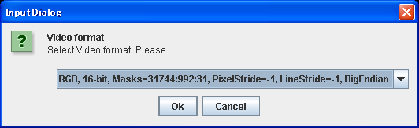
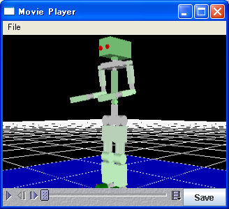

3D View概要
3D Viewを構成する各種要素について説明します。

- go home of eye pos. ボタン
クリックすることで 3DViewの視点をホームポジションに戻します。
右クリックするとメニューが表示され、現在の視点をホームポジションに設定したり、デフォルトの設定に戻したりすることができます。
ホームポジションはプロジェクトファイルに保存されます。
- Type選択
3D ViewのTypeを下記から選択できます。
- Room
- Walk
- Front
- Back
- Left
- Right
- Top
- Bottom
- Rotation Mode ボタン
クリックすることでRotation Modeに切り替えます。
3DViewをドラッグして回転させて視点を移動します。
- Zoom Mode ボタン
クリックすることでZoom Modeに切り替えます。
3DViewをドラッグしてズームして視点を移動します。
- Pan Mode ボタン
クリックすることでPan Modeに切り替えます。
3DViewをドラッグして水平垂直移動して視点を移動します。
- Polygon/Wire Frame ボタン
クリックすることで Polygon ⇔ Wire Frame 表示を切り替えます。
- show/hide z=0 plane ボタン
クリックすることで show z=0 plane ⇔ hide z=0 plane 表示を切り替えます。
Z軸が0の位置へのメッシュの表示の制御です。
- show/hide Collision ボタン
クリックすることで show Collision ⇔ hide Collision 表示を切り替えます。
干渉チェック法線の表示の制御です。
- hide/show Distance ボタン
クリックすることで hide Distance ⇔ show Distance 表示を切り替えます。
干渉チェックペアの最短距離の表示の制御です。
- nocheck/check Intersection ボタン
クリックすることで nocheck Intersection ⇔ check Intersection 表示を切り替えます。
干渉チェックペアの干渉確認の表示の制御です。
- hide/show Center of Mass ボタン
クリックすることで hide Center of Mass ⇔ show Center of Mass 表示を切り替えます。
重心位置の表示の制御です。
- hide/show Center of Mass on floor ボタン
クリックすることで hide Center of Mass on floor ⇔ show Center of Mass on floor 表示を切り替えます。
重心位置の環境モデルへの投影表示の制御です。
- set Background Color ボタン
クリックすることで "色の設定"ダイアログボックスが表示され Background Colorを変更できます。
- Capture ボタン
クリックすることで3DViewの静止画をPNG形式で保存することができます。
- record ボタン
クリックすることで3DViewの動画をMOV形式で保存することができます。拡張子は明示的に付けてください。
後述のMovie Playerを使わない場合、QuickTime Playerで再生できます。

"OK"をクリックすると、続いてVideo Formatの選択画面となります。

"OK"をクリックすると、Logの最初に戻って録画が始まります。再度"record"ボタンをクリックするか、Logの最後まで再生すると録画が止まります。
- movie player ボタン
クリックすることでMovie Playerを起動します。

- hide/show Vision Sensor ボタン
クリックすることで hide Vision Sensor ⇔ show Vision Sensor 表示を切り替えます。
Vision Sensorがある場合、表示の制御をします。
- Modelのバウンディングボックス表示ボタン
詳細はモデルの形状データをバウンディングボックス化する機能の使い方をご覧ください。
- restore model properties ボタン
クリックすることで Modelへの変更を元に戻します。
- Object Transelation ボタン
クリックすることで ３D画面を編集（並行移動）モードに変更します。
もう一度クリックするとビューモードに戻ります。
モデルをクリックすると、選択されたモデルが緑のボックスで表示され、マウスのドラッグで並行移動できます。
- Object Rotation ボタン
クリックすることで ３D画面を編集（回転）モードに変更します。
もう一度クリックするとビューモードに戻ります。
モデルをクリックすると、選択されたモデルが緑のボックスで表示され、マウスのドラッグで回転できます。
- Joint Rotation ボタン
クリックすることで ３D画面を編集（関節の回転）モードに変更します。
もう一度クリックするとビューモードに戻ります。
リンクをクリックすると、選択されたリンクが赤のボックスで表示され、マウスのドラッグで回転できます。
- Set Fitting Source ボタン
クリックすることで ３D画面を編集（接触先の選択）モードに変更します。
もう一度クリックするとビューモードに戻ります。
接触させたいリンクをクリックすると、赤い矢印が表示されます。
- Set Fitting Destination ボタン
クリックすることで ３D画面を編集（接触させる物体の選択）モードに変更します。
もう一度クリックするとビューモードに戻ります。
接触させたい場所をクリックすると、青い矢印が表示されます。
- Fit ボタン
クリックすることで(23)で設定したモデルと(24)で設定したモデルを接触させます。
- Set From Joint ボタン
クリックすることで ３D画面を編集（逆運動学基準リンクの選択）モードに変更します。
もう一度クリックするとビューモードに戻ります。
基準となるリンクをクリックすると、赤いボックスが表示されます。
- IK Rotation ボタン
クリックすることで ３D画面を編集（逆運動学 回転）モードに変更します。
もう一度クリックするとビューモードに戻ります。
リンクをクリックすると、選択されたリンクが赤のボックスで表示され、マウスのドラッグで回転できます。
- IK Translation ボタン
クリックすることで ３D画面を編集（逆運動学 並行）モードに変更します。
もう一度クリックするとビューモードに戻ります。
リンクをクリックすると、選択されたリンクが赤のボックスで表示され、マウスのドラッグで並行移動できます。
- ３D画面の状態を表示します。
ビューモードと編集モードがあります。
- (31)と合わせて、３D画面のクリッピング距離を設定します。
クリッピング距離とは、物体が描画される視点からの最短距離と、最長距離のことです。
この範囲外の物体は描画されません。特に大きな物体や小さな物体を表示する場合は必要に応じて変更してください。